Internal Combustion Engines:
Operation and Maintenance
6
Learning Outcome
When you complete this learning material, you will be able to:
Describe general routine and major maintenance requirements, and detailed operating and troubleshooting procedures for internal combustion engines.
Learning Objectives
You will specifically be able to complete the following tasks:
- 1. Describe the detailed startup procedures for an internal combustion engine.
- 2. Describe the detailed shutdown procedures for an internal combustion engine.
- 3. Explain the routine maintenance and monitoring requirements for an internal combustion engine.
- 4. Explain the major maintenance and overhaul requirements for an internal combustion engine.
- 5. Explain the troubleshooting of combustion and engine problems.
Objective 1
Describe the detailed startup procedures for an internal combustion engine.
INTRODUCTION
The startup of an internal combustion engine is usually not complicated, but it is important to follow procedures rigorously to ensure both the safety and the integrity of the equipment.
The following description is for a reciprocating internal combustion engine, but the description will vary according to the make and type of engine, its application and use and specific installation and environmental conditions.
Internal combustion engine operators should be fully aware of and understand written procedures and manuals provided by manufacturers, equipment packagers, and the operating company. Procedures and guidelines provided by the manufacturer and/or equipment packager must be strictly followed. The equipment operator will have his own practices and procedures that should also be understood and followed.
Different startup procedures are used for:
- • Standard startup for frequently used equipment
- • Standard startup for intermittently used or backup equipment
- • Startup after routine or minor maintenance
- • Startup after major maintenance or overhaul
BASIC STEPS IN STARTUP
Most start-ups are handled automatically by the engine control system with little or no intervention from an operator. Some engines are located in a remote location and can be started and stopped from a remote control room without on-site attendance. Other engines can be started automatically, such as a backup generator that starts automatically when there is a loss of main power.
The basic steps in a startup are:
- 1. Pre-start inspection
- 2. Engine barring
- 3. Initiation of startup either manually or automatically
- 4. Startup sequence including engine cranking, ignition, idling and loading
- 5. Post-startup checks
Pre-Start Inspection
Steps required for the pre-start inspection vary with the type of startup. For automatic starting and when the engine is in a remote location, these steps cannot be carried out but protective devices minimize the risks in the control system.
If the equipment is used frequently and no maintenance work has been done, only a few checks need to be carried out. These may include a walk-around and visual inspection of the engine to check for:
- • Leaks from the coolant system, especially from the pump seals, fittings, and hoses
- • Leaks from the oil system including pumps, fittings, piping, and tubing
- • Coolant level
- • Oil tank and sump level
- • Air intake obstructions
- • All guards and covers are in place and securely fastened
- • General hazards
- • Diesel fuel day tank levels
If routine, minor, or major maintenance has been done, the work area should be cleaned up and all tools, parts, and supplies removed prior to startup. Shutoff valves need to be opened or unlocked. Other maintenance steps and a more thorough pre-start inspection may be required.
Engine Barring
Large engines require barring during shutdown. The pre-lube pump is started and then the engine is reverse barred for at least two full revolutions. Check for coolant in the cylinders. The barring motor is then manually or automatically started and the engine is barred over for not more than one hour before the scheduled start.
Initiation of Startup
The startup is initiated by one of the following:
- • An automatic start signal to the engine from a control system or device, for example, based on a loss of power (for an electric generator)
- • A start signal initiated from a control system, either on-site or from a remote location, by a control system operator such as the example in Fig. 1
- • A manual start using a pushbutton on a local operator panel such as the one shown in Fig. 2
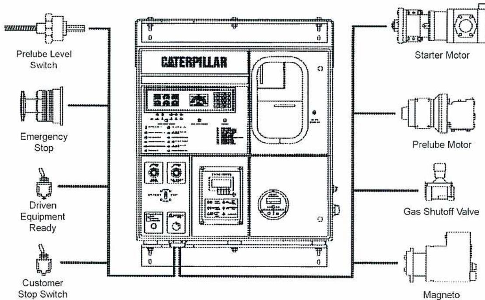
This diagram illustrates a Caterpillar computerized control panel. The central panel features the 'CATERPILLAR' logo at the top, followed by a digital display and several indicator lights. Below these are two analog gauges and a large rotary switch. Various components are connected to the panel via lines:
-
Left side connections:
- Prelube Level Switch
- Emergency Stop
- Driven Equipment Ready
- Customer Stop Switch
-
Right side connections:
- Starter Motor
- Prelube Motor
- Gas Shutoff Valve
- Magneto
Figure 1
Computerized Control Panel
(Courtesy of Finning-Caterpillar)
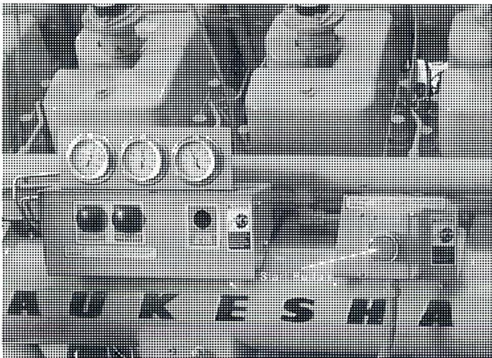
This photograph shows a manual start panel. At the top, there is a prominent 'DANGER' warning sign with the text 'KEEP AWAY FROM MOVING PARTS'. Below the warning, there are three circular gauges. The main panel contains several switches, including a large rotary switch on the right, and a smaller digital display. The word 'PARK' is visible at the bottom left of the panel.
Figure 2
Manual Start Panel
(Courtesy of Tom Van Hardevelde)
Most engines have controls that check the status of permissives or signals that have to be in the correct state for the start to commence. Some of these signals clear automatically when the abnormal condition goes away but others have to be reset manually. Some examples of permissives are:
- • Lube oil temperature
- • Jacket water temperature
- • Fuel gas pressure
Startup Sequence
The startup sequence following depends on the type of engine and starting system.
- 1. To lubricate the engine, operate the prelube pump for a determined time period after sufficient pressure is obtained.
- 2. If so equipped, the barring device, used to rotate the engine, should be engaged.
- 3. Engage the starter, the engine cranks over, and ignition commences.
- 4. Once the engine operates on its own, the starter is turned off.
- 5. The engine operates at idle speed until it warms up.
- 6. Load the engine by closing the breaker to the generator.
- 7. If the engine cranks for a determined time period, it will shutdown on overcrank.
Starting systems may be electric, using an electric motor run from a battery or AC power. Either of these systems is common with smaller engines. Larger engines usually need higher starting torque which requires a starter operated by air (2000 kPa) or by high pressure gas.
A start system, using an air starter and an air-operated prelube pump, is shown in Fig. 3. An air compressor supplies compressed air to a storage tank. Pressure regulators ensure the correct pressure for the starter and the prelube pump. The air to the starter is tied into the barring device to make sure that the engine cannot be started until the barring device is disengaged. Upon initiation from the control panel, a solenoid valve is activated and allows control air to be fed to the prelube relay valve which then provides compressed air to the prelube pump. Once prelube is completed, another signal is sent to the starter solenoid valve which activates the starter relay valve and allows the main air supply to reach the starter.
![Schematic diagram of an Air Start System. The diagram shows the flow of air from the 'Customer Supplied' section (Air Compressor, Water Separator, Air Filter, Check Valve, Air Storage Tank) through various components to the engine. Key components include a Manual Shutoff valve (A1), a Strainer, a Lubricator (not used with turbine), a Starter Relay Valve (B1), a Starter Solenoid Valve (B2), a Barring Device (B3), an Air Starter (B4), a Pressure Regulator, a Pressure Relief Valve, a Prelube Relay Valve, a Lubricator, and an Air Prelube Pump leading to Exhaust. Control lines from an 'Ess Panel' connect to a Prelube Solenoid Valve and the Starter Solenoid Valve. A dashed line indicates 'Customer or Factory Supplied' components. A legend at the bottom left defines line types: Site Air Supply (solid), Main Air Supply (dashed), Control Air Supply (dash-dot), and Electrical Signal (dotted).](fc46871d72c65d3381d9201646d23439_img.jpg)
Figure 3
Air Start System
(Courtesy of Finning-Caterpillar)
Post-Startup Checks
Once the engine is operating, check for any coolant and oil leaks. Record the operating conditions, speed, pressures, and temperatures, on a log sheet to ensure they are within acceptable limits and to use for future comparison to see if the engine is operating at its normal conditions. Individual pressures are recorded if the engine contains multiple turbochargers. Large diesel engines have individual cylinder pyrometers. Once the engine is loaded, the cylinders should be checked to see that the temperatures are balanced. The date and time of the startup and the running hours on the hour meter should be recorded in the log book along with any relevant observations or problems encountered.
Cold Starting
In low ambient temperature conditions, it may be necessary to heat the lube oil and possibly the jacket water or coolant to keep the engine block warm. If the oil is too cold, the starting torque may be too high and prevent the engine reaching the required cranking speed.
The oil may be heated with a heater in the oil tank or by circulating the oil or coolant through a heat exchanger. The oil or coolant temperature must be within acceptable limits before a start is initiated. Table 1 shows a typical approach where the ambient temperature is too low, so a slow warm-up is required. If a slow warm-up isn't possible, the lube oil and jacket water (JW) must be heated.
Table 1
Cold Starting Limits and Options
(Courtesy of Finning-Caterpillar)
| Ambient Temperature | Load Application | Minimum Desired JW Temp | Minimum Desired Oil Temp | Recommended Auxiliaries |
|---|---|---|---|---|
| TEMP > 0 deg C | After Slow Warm-up | 0 deg C | 0 deg C * | None * |
| TEMP < 0 deg C ** | After Slow Warm-up | 0 deg C | 0 deg C * | Lube Oil Heater |
| TEMP > 0 deg C | Block Loaded | 38 deg C | 10 deg C |
JW Heater/
Continuous Prelube |
| TEMP < 0 deg C ** | Block Loaded | 38 deg C | 10 deg C |
JW Heater/
Continuous Prelube Lube Oil Heater |
Objective 2
Describe the detailed shutdown procedures for an internal combustion engine.
SHUTDOWN PROCEDURES
There are two types of shutdowns:
- • Normal
- • Emergency
Normal Shutdown
A normal shutdown may be initiated by one of the following methods:
- • Automatically by the control system if the engine is not required, for example, when commercial power is restored and the backup generator is no longer required
- • Remotely by an operator at another location with a stop signal sent to the site
- • Manually by an operator on-site using a stop button at a local or remote panel
Upon activation of a normal shutdown, the load is reduced and the engine operates at idle speed for 15-30 minutes. Closing the fuel valve first and shortly afterwards (typically 10 seconds) stopping the ignition, stops the engine so that the fuel downstream of the fuel valve is exhausted and not allowed to collect in the engine. The prelube pump is operated for a predetermined time as a post-lube to assist with lubrication on run-down and for cooling.
Emergency Shutdown
An emergency shutdown may occur as a result of:
- • Automatic shutdown by the control system if the protective device is activated or if the parameters such as speed, pressure, or temperature are exceeded
- • Manual shutdown using a pushbutton
In an emergency shutdown, there is no cool down period and the fuel valve closes immediately. If the emergency does not endanger the operator or the condition of the engine, the ignition remains on for a short period so that all of the fuel is burned and not left in the engine and the exhaust system. For safety-related emergencies, the ignition is stopped at the same time as the fuel valve is closed. In these cases, when restarted, the engine should go through a purge cycle and crank for approximately 10 seconds with the fuel valve closed and the ignition system off. The post-lube cycle is activated as with a standard shutdown.
Objective 3
Explain the routine maintenance and monitoring requirements for an internal combustion engine.
INTRODUCTION
Good maintenance is important to ensure power output, efficiency, and long term engine condition. The results of good or bad maintenance are often not immediately evident, but there is a definite impact over the long term on performance and cost.
The engine manufacturer generally specifies the details of routine maintenance and monitoring of the internal combustion engine. However, these specifications apply to average conditions and every user has to consider whether the amount, frequency and type of maintenance have to be adjusted to account for the severity of the operating conditions. There are two major factors that affect maintenance:
- • Environmental conditions
- • Load
Environmental Conditions
Environmental conditions include:
- • High or low ambient temperatures
- • High altitude operation
- • External contaminants such as salt, dust and sand in the air
- • The presence of contaminants in the fuel
Load
If operated consistently at close to rated load, the reciprocating internal combustion engine operates most efficiently and requires the least maintenance. In some cases, higher than the rated load is allowed for peaking loads but these will always impact maintenance requirements. Operating at part load is detrimental to engine condition because the engine becomes over-lubricated. High cylinder pressures position the piston rings with the right clearance for sufficient lubrication. The problem is less severe for turbocharged engines. Typical time limits for part load operation are shown in Table 2. Referring to Table 2, a “NA” engine is one that is naturally aspirated while “TA” engine is turbo aspirated.
Table 2
Time Limits for Part Load Operation
(Courtesy of Finning-Caterpillar)
| Low Load Time Limits for Continuous Operation on Caterpillar Gas Engines | |||
|---|---|---|---|
| % Load |
G3300, G3400, G3500
NA Engine (hours) |
G3300, G3400, G3500
TA Engine (hours) |
G3600
TA Engine (hours) |
| Low Idle | 1 | 1 | 0.5 |
| High Idle | 2 | 4 | 2 |
| 10 | 4 | 8 | 8 |
| 20 | 8 | 24 | 24 |
| 30 | 12 | 100 | 100 |
| 40 | 24 | 750 | 750 |
| 50 | 50 | 750+ | 750+ |
| 60 | 100 | 750+ | 750+ |
| 70 | 750 | 750+ | 750+ |
| 80 | 750+ | 750+ | 750+ |
| 90 | 750+ | 750+ | 750+ |
| 100 | 750+ | 750+ | 750+ |
Look at vendor testing, use relevant experience, and do an in-depth analysis to develop a maintenance program that is applicable to a specific situation. The results can be documented in a computerized maintenance management system and include the following:
- • A detailed task description
- • How often the task is done
- • Time and skills required
- • Special procedures
- • Spare parts needed
Work orders can then be issued automatically to ensure that all tasks are carried out on time and results are documented.
ROUTINE MAINTENANCE
Routine maintenance consists of minor tasks such as the following:
- • Visual monitoring and inspection
- • Recording engine parameters on a log sheet
- • Checking fluid levels
- • Sampling fluids (oil and coolant)
- • Replacing filters
- • Greasing bearings
- • Testing relief valves
- • General cleanup
- • Calibrating control devices and instrumentation
- • Replacing spark plugs
The frequency with which these tasks are performed depends on the location of the equipment, remote or central, attended or unattended, and the type of engine. It is standard for visual monitoring and logging to be done once per shift or once per day. Other checks, such as oil and coolant testing, may be done once per week or even once per month. Other tasks are done typically at 6 and 12 month intervals. Some, such as oil changes, are based on operating hours or lubricant analysis.
Cooling System
Routine maintenance of the cooling system may include:
- • Inspecting cooling system components, piping, and hoses for leaks
- • Monitoring coolant level
- • Checking belt tension on pumps
- • Greasing water pumps
- • External cleaning of radiator or air cooler
- • Sampling coolant (optional)
- • Cleaning and flushing cooling system
Because coolant contains corrosion inhibitors and usually antifreeze, the quality of the coolant is important. Even where regular sampling and testing is done, regular cleaning and flushing is still required.
Lubrication System
Routine maintenance of the lubrication system may include:
- • Inspecting lubrication system components, piping, and hoses for leaks
- • Monitoring oil levels
- • Monitoring oil filter differential pressure
- • Checking belt tension for pumps
- • Oil sampling
- • Testing relief valves
- • Lube oil pressure adjustment
- • Oil change
There may be various oil levels to monitor. The most important oil level is in the crankcase because it supplies oil to the engine. The crankcase may be refilled automatically from a makeup tank that is topped up from barrels or a tanker truck. The makeup tank also has a level indicator. The oil level indicators in the crankcase and the makeup tank may be tied into the control system with an alarm and possibly an automatic shutdown for the crankcase oil level.
Different approaches may be used for ensuring oil quality. Oil quality may be affected by:
- • External contaminants such as dirt, sand or water
- • Contamination by combustion products
- • Coolant leaking from the oil cooler
- • Increase in viscosity
- • Increase in acid number
- • Depletion of oil additives
- • Particle wear from moving and sliding surfaces
For smaller engines, it is usually sufficient to replace the oil on a regular basis as determined by operating hours. If engine usage is low as with backup generators (less than 50%), base it on calendar time. A yearly oil change is standard.
For larger engines, it is common practice to take oil samples every 1-3 months and to have them analysed for contaminants. The timing of the oil change can then be based on the condition of the oil. Table 3 presents typical condemning limits for lube oil used on a turbocharged natural gas fuelled engine.
Table 3
Lube Oil Condemning Limits
(Courtesy of Waukesha Engine)
| LUBE OIL CONDEMNING LIMITS | |
|---|---|
| Lubricating oil condemning limits are established by the engine manufacturer's experience and/or used oil testing. | |
| Laboratory testing is highly recommended as a means of determining the used oil's suitability for continued use. | |
| Used oil testing should cover the following data: | |
| TEST | CONDEMNING LIMIT |
| Viscosity | -20/+30% Change |
| Flash Point | 180° C. |
| Total Base Number (TBN) | 50% of New Oil Value |
| Total Acid Number (TAN) | 2.5 Rise Above New Oil Value |
| Oxidation (Abs./CM) | 20-25 Above New Oil Value |
| Insolubles | Above 1.0-1.5% |
| Water Content | Above 0.15 - 0.20 Wt. % |
| Glycol | Any Detectable Amount |
| Wear Metals | Trend Analysis |
An online centrifuge spinner, such as the one shown in Fig. 4, is used to clean the oil. The photo also shows a pair of regular bypass filters. It is a bypass system, so only a part of the oil is circulated through the centrifuge and cleaned.
Contaminant particles are collected on a paper filter that is replaced at regular intervals established by checking the amount of deposit collected. Bypass filters keep the oil clean and serve to increase the time between oil changes by approximately 25%.
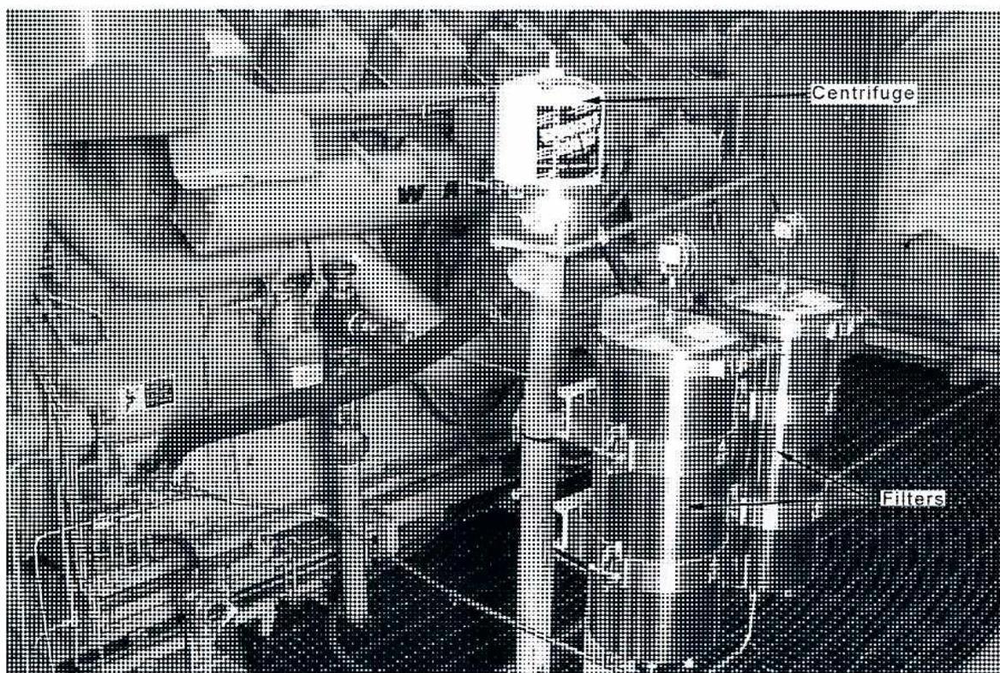
Figure 4
Online Oil Cleaning Using a Centrifuge Spinner and Bypass Filters
(Courtesy of Tom Van Hardevelde)
Fuel and Ignition Systems
Routine maintenance of the fuel and ignition systems may include:
- • Inspecting and greasing (if needed) governor and carburetor linkages
- • Inspecting governor oil level
- • Monitoring fuel filter differential pressure
- • Inspecting ignition wiring
- • Adjusting the carburetor and governor
- • Checking ignition timing
- • Checking pressure regulators
- • Cleaning and re-gapping or replacing spark plugs
- • Checking fuel injectors on diesel engines for unobstructed motion (shellac often causes them to stick wide open)
Engine Components
Routine maintenance for engine components may include:
- • Inspecting air intake filter for obstruction
- • Monitoring air filter differential pressure
- • Checking exhaust back pressure
- • Checking crankcase pressure and breather cap
- • Checking turbocharger
- • Cleaning intercooler (for turbocharged engines)
Instrumentation and Controls
Routine maintenance for instrumentation and controls may include:
- • Visual inspection of the instrumentation and controls wiring and connectors to ensure they are secure
- • Calibrating temperature and pressure switches
- • Calibrating temperature and pressure sensors
- • Testing the overspeed switch and protection system
MONITORING
To ensure the continuous operation of an internal combustion engine, it is important to monitor the engine parameters. Readings are recorded on a log sheet. Computerized monitoring programs may be used with log data gathered either with a hand-held data collector or by continuous monitoring through the control system.
Table 4 shows an example of a paper engine log sheet. The date and time of the log is recorded along with the name of the operator who completed it and the hours on the run meter. Each parameter is clearly described including its unit of measure. Alert values are also noted for each parameter where they are relevant. Where an alert value has been exceeded, the reading is circled.
The sequencing of the parameters is always an issue. For recording purposes, sequence the parameters in the order that the readings are taken. When viewing the results, organize the readings logically according to systems and types of readings. The log sheet in Table 4 is organized this way but has a separate column which indicates the normal input sequence for reference.
Sometimes a calculated value is required to recognize an abnormal condition. If the calculation is simple, it can be added to the log sheet, as in Table 4, with the exhaust temperature spread and several pressure and temperature differences. The spread is the difference between the lowest and highest exhaust temperatures. If the spread is caused by an exhaust temperature that is too high, the carburetor could be receiving too much fuel. If the temperature is too low, there could be too little fuel or incorrect timing.
Another calculation shown in Table 4 is the manifold pressure and temperature differences that apply to an engine that has a right bank and a left bank, each with its own turbocharger.
Everyone who logs equipment needs to be trained not only how to take readings but also what the readings are used for and what to do if an alert is exceeded. Someone who is familiar with the engine and its operation should document the abnormal information separately from the log sheet.
Table 4
Example of a Log Sheet
| INPUT SEQ. | PARAMETER | UOM | LOW ALERT | HIGH ALERT | READINGS | ||
|---|---|---|---|---|---|---|---|
| A. Smith | A. Smith | P. Jones | |||||
| 1 | Name | 03.05.15 | 03.05.16 | 03.05.17 | |||
| 2 | Date | YY.MM.DD | |||||
| 3 | Time | HH.MM | 0830 | 0900 | 0845 | ||
| 4 | Run Hours | HRS | 12,345 | 12,369 | 12,393 | ||
| 5 | Ambient temperature | °C | 21 | 16 | 18 | ||
| 6 | Engine speed | RPM | 1100 | 1220 | 1200 | 1195 | 1205 |
| 11 | Turbocharger speed-left | RPM | 16,500 | 16,400 | 15,900 | 16,000 | |
| 12 | Turbocharger speed-right | RPM | 16,500 | 16,300 | 16,000 | 15,900 | |
| 13 | Air filter diff pressure | mm H2O | 400 | 210 | 215 | 220 | |
| 9 | Manifold pressure-left | kPa | 85 | 86 | 85 | ||
| 10 | Manifold pressure-right | kPa | 83 | 82 | 84 | ||
| Calc. | Pressure difference | kPa | 10 | 2 | 4 | 1 | |
| 7 | Manifold temp-left | °C | 36 | 35 | 36 | ||
| 8 | Manifold temp-right | °C | 34 | 36 | 37 | ||
| Calc. | Temp difference | °C | 5 | 2 | 1 | 1 | |
| 14 | Fuel pressure | kPa | 200 | 350 | 320 | 330 | 360 |
| 16 | Oil pressure | kPa | 275 | 380 | 290 | 295 | 293 |
| 18 | Oil temperature | °C | 75 | 90 | 82 | 83 | 82 |
| 17 | Oil filter diff pressure | kPa | 100 | 60 | 62 | 63 | |
| 15 | Oil level | % | 50 | 80 | 85 | 85 | |
| 20 | Jacket water temp-inlet | °C | 50 | 70 | 60 | 62 | 61 |
| 19 | Jacket water temp-outlet | °C | 75 | 85 | 82 | 84 | 86 |
| Calc. | Temp difference | °C | 5 | 15 | 2 | 9 | 6 |
| 21 | Coolant level | % | 75 | 80 | 75 | 77 | |
| 22 | Exhaust temp #1 | °C | 550 | 502 | 500 | 490 | |
| 23 | Exhaust temp #2 | °C | 550 | 503 | 545 | 540 | |
| 24 | Exhaust temp #3 | °C | 550 | 500 | 503 | 498 | |
| 25 | Exhaust temp #4 | °C | 550 | 498 | 507 | 502 | |
| 26 | Exhaust temp #5 | °C | 550 | 506 | 509 | 503 | |
| 27 | Exhaust temp #6 | °C | 550 | 508 | 501 | 510 | |
| 28 | Exhaust temp #7 | °C | 550 | 507 | 502 | 506 | |
| 29 | Exhaust temp #8 | °C | 550 | 506 | 504 | 503 | |
| Calc. | Temp spread | °C | 40 | 10 | 45 | 50 | |
COMMENTS:
Objective 4
Explain the major maintenance and overhaul requirements for an internal combustion engine.
INTRODUCTION
Major maintenance requirements for an internal combustion engine vary considerably. Manufacturers provide detailed instructions and recommendations on major maintenance that must be carefully followed. However, each engine is considered separately and the frequency of maintenance is dependent on individual load, type of fuel, and environmental factors.
MAJOR MAINTENANCE
The following description is an example of the types of major maintenance that might be carried out, but it should never be used as the basis for an actual maintenance program.
Some maintenance activities relate to repair and replacement of major components in auxiliary systems. These can usually be done as needed without major impact on the availability of the engine.
Other maintenance actions deal with major mechanical components including pistons, cylinders, heads, crankshaft, valves, rocker assemblies and camshafts. If maintenance of these parts is required, it is often more effective to perform a complete overhaul of all or most of these components because of the time required. Typically, this occurs every 30,000 to 50,000 hours or 5 years for a high usage engine. If the engine is small enough (up to approximately 1000 kW), it may be possible to remove the entire engine, replace it with a spare or rental, and then overhaul it in a repair facility. Otherwise, the overhaul is done on-site and takes 4 - 6 weeks to complete.
Cylinder Heads
Cylinder heads incorporate the valves and the rocker mechanism that activate the valves as controlled by the camshaft (see Fig. 5). The valves close against a valve seat that wears over time, a process that is called valve recession. There are screws in the rocker mechanism (see Fig. 5 and Fig. 6) that allow the valve clearance (or valve lash) to be adjusted on a regular basis (every 3 - 6 months). On large engines, each cylinder has an individual head.
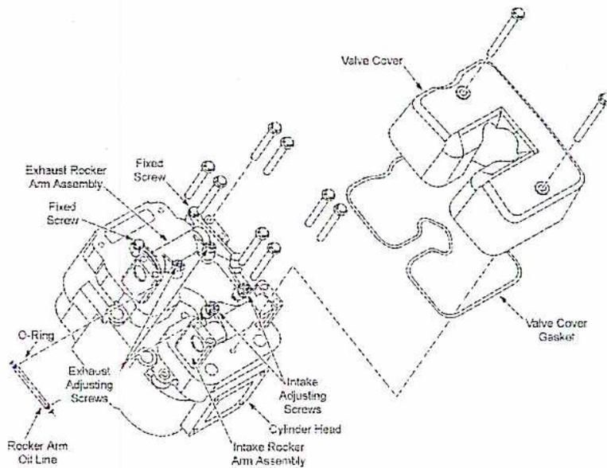
This diagram illustrates the rocker arm assembly of an engine. It shows the cylinder head with two rocker arm assemblies: an exhaust rocker arm assembly on the left and an intake rocker arm assembly on the right. Key components labeled include fixed screws, O-rings, exhaust and intake adjusting screws, and a rocker arm oil line. To the right, the valve cover and its gasket are shown separately.
Figure 5
Rocker Arm Assembly
(Courtesy of Waukesha Engine)
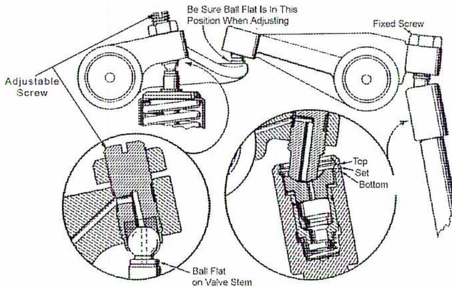
This diagram details the valve adjusting components. It features an adjustable screw and a fixed screw used for valve adjustment. Two circular insets provide cross-sectional views: the left inset shows the ball flat on the valve stem, and the right inset shows the top and bottom of the rocker arm assembly. A note indicates, "Be Sure Ball Flat Is In This Position When Adjusting."
Figure 6
Valve Adjusting Components
(Courtesy of Waukesha Engine)
The valve seat is replaced when the valve recession reaches a specified limit. The valve guide in which the valve stem is contained also wears over time and is replaced. As illustrated in Fig. 7, a manufacturer has specified limits for the critical lettered dimensions. It is common for the entire cylinder head to be refurbished at once with all valves, valve seats and guides, and other worn components replaced.
![Figure 7: Valve Train Dimensions. This technical diagram shows various dimensions of a valve train assembly. On the left, a full valve assembly is shown with labels: A (total length), Valve Stem, B (stem diameter), Valve Guides, Valve Seat, C (valve face diameter), D (seat angle), E (guide length), F (guide diameter), G (stem diameter at top), H (seat width), I (seat diameter), J (seat depth), and K (seat angle). In the center, two cross-sections of valve guides are shown for 'Intake' and 'Exhaust' valves, with dimensions E, F, and G. On the right, a cross-section of a cylinder head shows the valve train in situ, with labels: L (guide length), M (guide diameter), N (seat depth), O (seat diameter), and Cylinder Head.](3376f33dd811eb3e39ff47117c958ed9_img.jpg)
Figure 7
Valve Train Dimensions
(Courtesy of Waukesha Engine)
Cylinders and Pistons
Cylinders have sleeves (also called liners) that can be replaced when they exceed prescribed tolerances or become damaged. Excessively worn liners cause blow-by into the crankcase which reduces cylinder pressure and contaminates lube oil. Worn cylinder liners may cause increased crankcase pressure. Diesel engine liners should be checked for cavitation erosion on the leeward side of the coolant flow direction.
An example of a cylinder sleeve is shown in Fig. 8 and Fig. 9. There are external grooves for rubber or Teflon rings toward the bottom of the sleeve that seal against the crankcase. At the top of the sleeve is a flange that ensures that the sleeve stays at the top of the crankcase. Diesel engine sleeves should be checked for cavitation erosion of the lee side of the coolant flow direction.
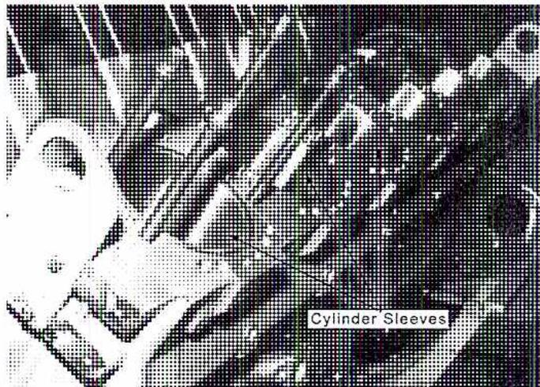
Figure 8
Cylinder Sleeves
(Courtesy of Waukesha Engine)
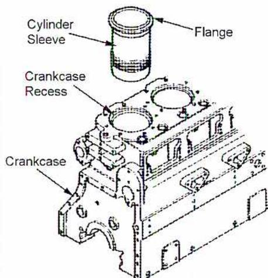
Figure 9
Crankcase and Cylinder Sleeve
(Courtesy of Waukesha Engine)
The main area of wear with pistons is the piston rings which can be replaced. Important piston and piston ring dimensions are shown with letters in Fig. 10. The piston may have to be replaced if there is wear where the piston pin connects to the connecting rod, Fig. 10(C).
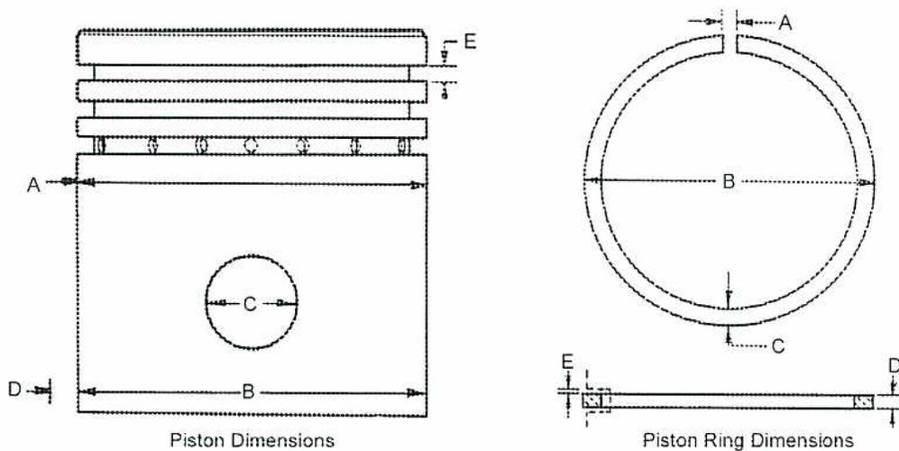
Figure 10
Pistons
(Courtesy of Waukesha Engine)
Rods, Crankshaft, Camshaft, and Bearings
Bearings on the crankshaft include main support and connecting rod bearings. Required clearances are crucial to proper operation, as shown in Fig. 11 and Fig. 12.
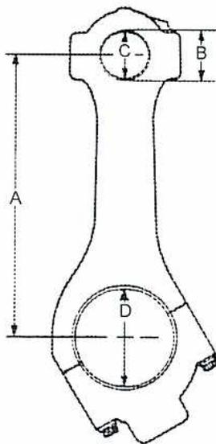
Figure 11
Connecting Rod Dimensions
(Courtesy of Waukesha Engine)
The crankshaft deflection, shown as “D” in Fig. 12, is measured with a crankshaft micrometer. When the load is direct coupled to the engine flywheel, outboard bearing misalignment can cause the crankshaft to flex as it rotates. Engine specifications will indicate the maximum allowable deflection. The outboard bearing must be aligned to keep the deflection within limits. Engine with flexible couplings or universal drive shafts do not experience this problem.
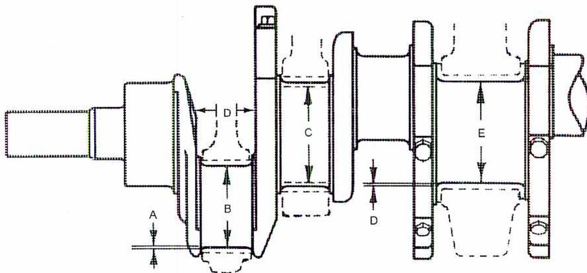
Figure 12
Crankshaft Dimensions
(Courtesy of Waukesha Engine)
Fig. 13 illustrates a typical main bearing shell. The lobes on the camshaft will wear and may have to be repaired or replaced.
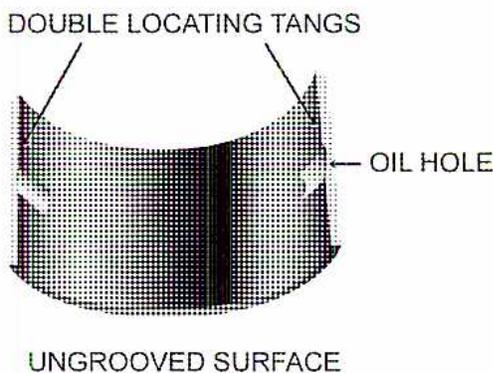
Figure 13
Lower Main Bearing Shell
(Courtesy of Waukesha Engine)
Another part of the rotating components is the timing gears for the camshaft and possibly a gear train for auxiliary pumps, as illustrated in Fig. 14. Condition of the gear teeth can be measured from the backlash which should not exceed specified limits.
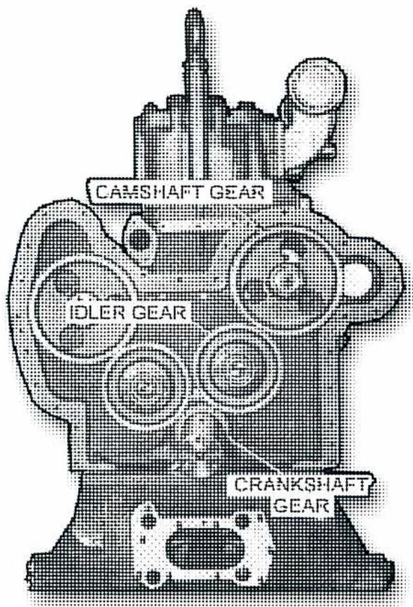
Figure 14
Timing Gears
(Courtesy of Waukesha Engine)
Cooling System
In the cooling system, major maintenance involves the water pump and the cooler. The most common problem with the water pump is deterioration of the seals. When the seals deteriorate, the pump is overhauled and the seals are replaced. Leaks are detected through a weep hole.
The cooler requires cleaning and flushing on a regular basis, but the cooler may have to be replaced if there is long term corrosion.
Lubrication System
Major maintenance of the lubrication system is related to the oil pumps and the oil cooler. Once seals begin to leak or pump pressure is not adequate, the oil pump should be replaced and sent out for repair.
If increases in lube oil temperature cannot be traced to a malfunctioning water pump, an incorrect thermostat setting, or increased engine load, the cooler must be inspected internally for deposits, especially on the coolant side of the cooler.
Intake and Exhaust System
Due to the vibration from operation, the intake and exhaust ducting develop cracks and fasteners may become loose. Corrosion occurs especially in the exhaust system because combustion produces water, and fuel contaminants may produce harmful acids.
The integrity of the intake ducting is very important, particularly downstream of the filters, so that unfiltered air is not drawn into the intake. If exhaust gas leaks into a room, it poses a safety hazard. Because high exhaust back pressure is detrimental to engine operation, it must be monitored. The muffler corrodes over time and causes increased sound emissions. Inspect the external and internal intake ducting and measure the exhaust back pressure on a yearly basis.
Fuel and Ignition System
Most of the maintenance on the fuel and ignition systems consists of routine adjustments and minor replacements such as spark plugs. There are other parts that may require replacement or refurbishment.
On lean burn engines, admission valves that admit fuel directly into the cylinder ( Fig. 15) are critical and must be cleaned on a regular basis, usually every 4 000 hours of operation. On the ignition system, the wiring and the coils may need replacement based on its condition during visual inspection. The magneto drive disc is typically replaced every 4000 running hours.
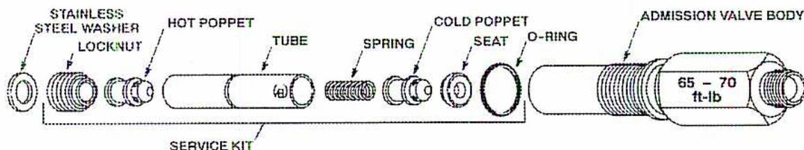
Figure 15
Fuel Admission Valve
(Courtesy of Waukesha Engine)
Many engines, especially lean burn engines, are tuned using an oxygen analyser (Fig. 16). Most oxygen analysers are designed around the fuel cell principle. The oxygen in
the exhaust is combined with hydrogen to produce water and conductivity which is measured. Since ambient air contains 21% oxygen, the range is usually 0 - 25% and the sensor is easy to calibrate. Normal exhaust emission levels should be about 10% oxygen. The flow rate should be minimal or the readings are affected. The analyser has a flow sampling system that protects it against:
- • Water which is present in all exhaust
- • Over-pressuring on turbocharged engines
- • Temperatures which are too hot or too cold
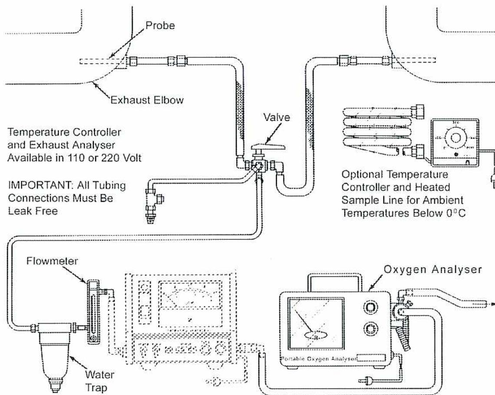
The diagram illustrates the setup for an exhaust gas oxygen analyser. A probe is inserted into an exhaust elbow. The tubing from the probe passes through a valve and then splits. One path leads to a 'Temperature Controller and Exhaust Analyser' which is 'Available in 110 or 220 Volt'. A note states 'IMPORTANT: All Tubing Connections Must Be Leak Free'. The other path from the valve leads to an 'Optional Temperature Controller and Heated Sample Line for Ambient Temperatures Below 0°C'. Below the valve, the tubing continues to a 'Flowmeter' and then a 'Water Trap'. From the water trap, the tubing connects to a 'Portable Oxygen Analyser' which is part of a larger 'Oxygen Analyser' unit. The oxygen analyser unit has a display screen and control knobs. The entire system is connected by a network of tubing and valves.
Figure 16
Exhaust Gas Oxygen Analyser Schematic
(Courtesy of Waukesha Engine)
Turbocharger System
The compressor and the turbine determine the efficiency of the turbocharger. If the inlet air is not clean, the compressor side may become fouled and the boost pressure will be reduced. The high temperature of the exhaust gases and fuel contaminants such as sulphur cause deterioration on the turbine side and a lack of boost pressure. The other area of wear is the bearings, which is verified by measuring the clearance in the axial and radial directions (Fig. 17). If the limits are exceeded, the turbocharger should be removed and sent in to a shop for repair.
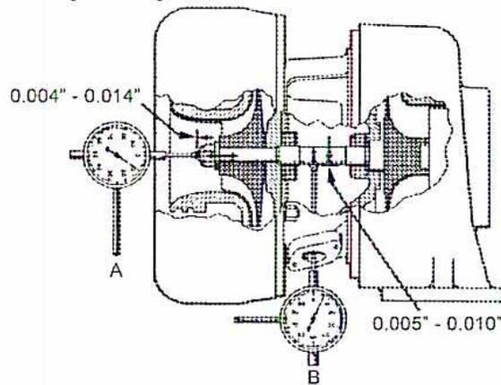
Figure 17
Turbocharger Bearing Checks
(Courtesy of Waukesha Engine)
The wastegate assembly that bypasses exhaust not required by the turbocharger may also have to be checked and calibrated, as illustrated in Fig. 18.
![Figure 18: Turbocharger Wastegate Calibration. A schematic diagram showing the calibration setup for a turbocharger wastegate. A 'Test Unit' is mounted on a 'Bench'. A 'Height Gauge' is used to measure the 'Gauge Height' of the wastegate assembly. The assembly is connected to a 'Regulator Air Supply' which is connected to a 'Plant Air Source'. A 'Gauge' is connected to the 'Compressor Discharge Pressure Sensing Port' to measure pressure in 'PSIG (kPa)' with '(0.1 PSI [0.7 kPa] Increments)'. 'Air Flow' is indicated by an arrow pointing from the regulator towards the test unit. A 'Continuous Tapping with a Light Mallet or Use a Pencil Engraver' is indicated for the wastegate assembly. A 'Gravity' arrow points downwards from the test unit.](759c7d62402f0b4651ddce292be5bdef_img.jpg)
Figure 18
Turbocharger Wastegate Calibration
(Courtesy of Waukesha Engine)
Starting System
Another component likely to require major maintenance is the starter. Its effectiveness is determined by its ability to crank the engine to the required speed. Once this becomes a problem, the starter should be removed, inspected, and overhauled. The quality of the start gas may also affect the starter if wellhead gas is used.
Objective 5
Explain the troubleshooting of combustion and engine problems.
INTRODUCTION
Good troubleshooting methods minimize the effects of problems with equipment availability and reliability. In addition to sound knowledge of internal combustion engines and their effective operation, it is necessary to take the correct approach to problems.
A potential problem may become evident through human observation, routine monitoring and logging, inadequate performance (dependent on the type of load), or a control system alarm or shutdown. The stages in troubleshooting may consist of some or all of these steps:
- 1. Detection of a problem.
- 2. Preliminary investigation using available information from the control system (e.g. alarm indication), log sheets, performance readings, and troubleshooting guides.
- 3. Attempts to rectify the problem.
- 4. Consultation with maintenance experts.
- 5. Consultation with technical specialists and possibly the manufacturer.
General principles for effective troubleshooting are as follows:
- • Do not jump to conclusions quickly; keep an open mind and stick to the facts
- • Take time to gather relevant data and information
- • Consult others who may have important information
- • Try easy, low cost, and low risk fixes or solutions first
- • Consult experts if the problem is difficult or beyond your expertise
- • Do not stop until you are sure that the problem has been resolved
- • Document the problem and steps taken to resolve it on a work order or other standard form
ENGINE TROUBLESHOOTING
Troubleshooting information is often presented in a standard chart provided by most manufacturers. Table 5 is an example of a standard troubleshooting chart.
There are three aspects to internal combustion engine troubleshooting. The symptom describes what an operator might notice or detect during the operation of the engine. The probable cause lists the likely reasons for the symptom. The remedy makes recommendations on how the problem may be resolved.
Table 5
Example Troubleshooting Chart
(Courtesy of Waukesha Engine)
| SYMPTOM | PROBABLE CAUSE | REMEDY |
|---|---|---|
| Engine crankshaft cannot be barred over. | Load not disengaged from engine | Disengage load. |
|
Engine will crank, but will not start.
(10°F minimum ambient temperature) |
ON-OFF switch in OFF position or defective (if used). | Place switch in the ON position or replace if defective. |
| Fuel throttle or manual shutoff control in OFF position. | Place fuel throttle or manual shutoff control in ON position. | |
| Safeties tripped. | Determine cause, correct, and reset. | |
| Insufficient cranking speed: | ||
| a. Low starting air/gas pressure. | a. Build up air/gas pressure 100 - 125 rpm required to start engine. | |
| b. Lube oil temperature too low or viscosity too high. | b. Change lube oil or raise the oil temperature. | |
| Fuel system inoperative: | ||
| a. Insufficient fuel supply or fuel pressure. | a. Check gas pressure. | |
| Faulty ignition system: | ||
| a. No power to ignition module. | a. Reconnect. | |
| b. Low or no output from ignition module | b. Replace ignition module as required. | |
| c. Hall-effect pickup disconnected, or damaged. | c. Reconnect. | |
| d. Incorrect ignition timing. | d. Reset the timing. | |
| e. Broken or damaged wiring. | e. Repair or replace. | |
| f. Spark plug(s) not firing. | f. Check gap/replace as required. | |
| Insufficient or no air intake: | NOTE: Bar the engine over by hand to verify that cylinders are clear. Inspect the intake manifold for accumulations of lube oil. | |
| a. Clogged intake air filters. | a. Remove and clean | |
| b. Clogged/dirty intercooler (air side). | b. Remove and clean. |
| SYMPTOM | PROBABLE CAUSE | REMEDY |
|---|---|---|
| Engine will crank, but will not start (cont'd). |
Detonation Sensing Module Inoperative or in Shutdown Condition:
a. DSM in shutdown mode. b. Wiring from sensors to DSM damaged. |
a. Check DSM diagnostic display codes, and perform appropriate procedures as outlined in
Form 6268, DSM Custom Engine Control® Detonation Sensing Module Installation, Operation, And Maintenance Manual
. Contact your Waukesha Engine Distributor for assistance.
b. Repair or replace wiring as required. Refer to Form 6268, DSM Custom Engine Control® Detonation Sensing Module Installation, Operation, And Maintenance Manual , and rerun AutoCal program. Contact your Waukesha Engine Distributor for assistance. |
|
AFM Inoperative or in Alarm Condition:
a. Wiring from sensors, Air Fuel Module or AFM actuator damaged. b. AFM in alarm mode. |
a. Repair or replace wiring as required. Refer to
Form 6263, AFM Custom Engine Control® Air/Fuel Module Second Edition
. Contact your Waukesha Engine Distributor for assistance.
b. Check AFM diagnostic display codes, and perform appropriate procedures as outlined in Form 6263, AFM Custom Engine Control® Air/Fuel Module Second Edition . Contact your Waukesha Engine Distributor for assistance. |
|
|
Governor inoperative:
a. Governor set incorrectly: b. Insufficient oil: 1. UG-8 low oil level. 2. Water/sludge in oil passages. c. Binding control linkage: 1. Linkage dirty. |
Contact your Waukesha Engine Distributor for assistance.
1. Add oil. 2. Clean or replace governor. 1. Clean. |
|
| Engine stops suddenly. | Safeties tripped. | Determine cause, correct, and reset. |
| Insufficient fuel supply. | Check gas pressure. | |
| Low oil pressure causes engine protection control to shut engine down engine | Inspect lubricating oil system and components; correct cause. | |
| High coolant temperature causes engine protection control to shut engine down. | Inspect cooling system and components; correct cause. | |
| High intake manifold temperature. | Correct cause. | |
| High lube oil temperature. | Correct cause. | |
| Engine overspeed causes engine protection control to shut down engine. | Determine and correct cause. | |
| Excessive load causes engine to stall. | Determine and correct cause of overload. | |
|
Insufficient intake air:
a. Clogged intake air filter(s). b. Clogged intercooler (air side). |
a. Remove and clean. b. Remove and clean. |
|
| Obstructed exhaust manifold. | Locate and remove obstruction. | |
|
Seizure of bearings main, connecting rod, piston pin or camshaft.
a. Lack of lubrication. b. Dirt in lube oil. |
Replace bearings - clean up or replace crankshaft, camshaft or piston pins, as required.
a. Check lube oil system; correct cause. b. Check lube oil filters. |
Image: Waukesha Logo
Page 293
| SYMPTOM | PROBABLE CAUSE | REMEDY |
|---|---|---|
| Engine stops suddenly (Cont'd). |
Detonation Sensing Module Inoperative or in Shutdown Condition:
|
|
AFM Inoperative or in Alarm Condition:
|
|
|
| Engine loses power. |
Insufficient fuel:
|
|
Air intake system malfunction:
|
CAUTION
Bar the engine over by hand to verify that the cylinders are clear. Inspect the intake manifold for accumulations of lube oil.
|
|
Detonation sensing module, sensing detonation condition in one or more cylinders:
|
|
|
AFM Inoperative or in Alarm Condition:
|
|
|
| Air leaks in intake system. | Find and correct as required. | |
Turbocharger malfunction or failure:
|
|
| SYMPTOM | PROBABLE CAUSE | REMEDY |
|---|---|---|
| Engine loses power (Cont'd). |
Engine misfiring:
a. Sticky gas admission valve. |
a. Repair or replace gas admission valve. |
| Ignition system timing incorrect. | Re-time. | |
|
Low compression pressure:
a. Misadjusted intake and exhaust valves (if recently overhauled). |
a. Readjust. | |
| Excessive exhaust system backpressure. | Correct as required. | |
| Engine will not shut down using normal stopping procedures. | Defective ON-OFF switch. | Shut off fuel supply. |
|
⚠ WARNING
Shut off the gas supply for positive shutdown of gas engines. Inspect the intake manifold for accumulations of lube oil. |
Overheated combustion chamber deposits cause the engine to run on auto ignition. | Allow engine to cool down before attempting to stop. |
| Engine will not reach rated speed. | Engine overloaded. | Determine and correct cause. |
| Insufficient fuel supply. | Check fuel supply system. | |
|
AFM Inoperative or in Alarm Condition:
a. Wiring from sensors, Air Fuel Module or AFM actuator damaged b. AFM in alarm mode. |
a. Repair or replace wiring as required. Refer to Form 6263,
AFM Custom Engine Control
®
Air/Fuel Module Second Edition
. Contact your Waukesha Engine Distributor for assistance.
b. Check AFM diagnostic display codes, and perform appropriate procedures as outlined in Form 6263, AFM Custom Engine Control ® Air/Fuel Module Second Edition . Contact your Waukesha Engine Distributor for assistance. |
|
| Restricted air intake. | Correct cause. | |
| Ignition not properly timed. | Re-time. | |
| Tachometer inaccurate. | Calibrate or replace tachometer. | |
| Engine cannot make rapid load changes. |
Engine misfiring:
a. Prechamber gas admission valves sticking. b. Admission valve plugged. |
a. Clean or replace.
b. Clean or replace. |
| Individual cylinders misfire. | Prechamber gas admission valve stuck shut. | Clean or replace valve. |
| Engine will not run at maximum power. |
Engine misfiring:
a. Fuel system setting incorrect |
a. Contact your Waukesha Engine Distributor for assistance. |
|
AFM Inoperative or in Alarm Condition:
a. Wiring from sensors, Air Fuel Module or AFM actuator damaged. b. AFM in alarm mode. |
a. Repair or replace wiring as required. Refer to Form 6263,
AFM Custom Engine Control
®
Air/Fuel Module Second Edition
. Contact your Waukesha Engine Distributor for assistance.
b. Check AFM diagnostic display codes, and perform appropriate procedures as outlined in Form 6263, AFM Custom Engine Control ® Air/Fuel Module Second Edition . Contact your Waukesha Engine Distributor for assistance. |
| SYMPTOM | PROBABLE CAUSE | REMEDY |
|---|---|---|
| Engine detonates. | Engine overloaded. | Determine and correct cause of overload. |
| Incorrect ignition timing. | Reset to specification. | |
|
Engine misfiring:
a. Spark plugs misfiring. b. Sticking gas admission valve. |
a. Clean and regap, or replace spark plugs.
b. Clean or replace valve |
|
| Emission levels too high. | Advanced ignition timing. | Reset to specification. |
| Air/fuel ratio incorrect. | Reset to specification. | |
|
AFM Inoperative or in Alarm Condition:
a. Wiring from sensors, Air Fuel Module or AFM actuator damaged. b. AFM in alarm mode. |
a. Repair or replace wiring as required. Refer to Form 6263,
AFM Custom Engine Control™ Air/Fuel Module Second Edition
. Contact your Waukesha Engine Distributor for assistance.
b. Check AFM diagnostic display codes, and perform appropriate procedures as outlined in Form 6263, AFM Custom Engine Control™ Air/Fuel Module Second Edition . Contact your Waukesha Engine Distributor for assistance. |
|
|
Engine misfiring:
a. Faulty ignition system. b. Prechamber fuel system incorrectly set. c. Sticking gas admission valve. |
a. Repair or replace components as required.
b. Reset per fuel system specification. c. Clean or replace valve. |
|
| Low or fluctuating lube oil pressure. | Insufficient oil. | Add oil as required. |
| ⚠ CAUTION Shut down the engine immediately. | Lube oil pressure gauge inaccurate. | Compare to master gauge. Replace gauge if necessary. |
| Oil gauge line plugged or valve shut. | Renew gauge line; open valve | |
| Lube oil filters plugged. | Change elements; clean filter. | |
| Lube oil pressure regulating valve stuck in open position. | Clean and polish valve. | |
| Oil pressure regulating valve set too low. | Refer to Table 1.15-2 and readjust oil pressure regulating valve to proper pressure at governed speed. | |
| Lube oil dilution. | Change oil and filter elements. Determine and correct source of dilution. | |
| Lube oil of low viscosity. | Change to higher viscosity oil as recommended. | |
| Lube oil foaming. | Use oil grade recommended. Check for water leaks into oil. | |
| Clogged oil inlet screen(s). | Remove and clean screen(s). | |
| Engine is operated at angles that exceed the maximum safe tilt specification. | Operate within maximum safe tilt angles (see Specifications). | |
| Dirty oil cooler. | Clean. | |
| Low gas/air pressure. | Insufficient line pressure. | Increase line pressure. |
| SYMPTOM | PROBABLE CAUSE | REMEDY |
|---|---|---|
| High gas/air pressure | Incorrectly adjusted gas regulator. | Readjust. |
| Incorrect spring in gas regulator. | Replace spring. | |
| Excessive line pressure. | Reduce line pressure. | |
|
AFM inoperative or In Alarm Condition:
a. Wiring from sensors, Air Fuel Module or AFM actuator damaged. b. AFM in alarm mode. |
a. Repair or replace wiring as required. Refer to Form 6263, AFM Custom Engine Control ™ Air/Fuel Module Second Edition . Contact your Waukesha Engine Distributor for assistance. b. Check AFM diagnostic display codes, and perform appropriate procedures as outlined in Form 6263, AFM Custom Engine Control ™ Air/Fuel Module Second Edition . Contact your Waukesha Engine Distributor for assistance. |
|
| High lube oil pressure. | Misadjusted oil pressure regulating valve. | Refer Section 4.30 Lube Oil Pressure Adjustment , and readjust oil pressure regulating valve to proper pressure. |
| Lubricating oil of high viscosity. | Change to lower viscosity oil as recommended. | |
| Low jacket water temperature. | Gauge inaccurate. | Compare to master gauge; replace gauge if necessary. |
| High jacket water temperature. | ⚠ CAUTION Allow engine to cool. | |
| Gauge inaccurate. | Compare to master gauge; replace gauge if necessary. | |
| Gauge line clogged or valve shut | Replace line, open valve. | |
| Low coolant level. | Fill cooling system. | |
| Broken or loose water pump belts. | Replace or adjust belts. | |
| Air bound cooling system. | Purge air from cooling system. | |
| Engine overloaded. | Determine and correct cause. | |
| Leaking pump seals. | Repair pump. | |
| Frozen coolant. | Completely thaw cooling system before restarting engine. | |
| Incorrect ignition timing. | Reset ignition timing. | |
| High auxiliary water temperature. | Gauge inaccurate. | Compare to master gauge; replace gauge if necessary. |
| Clogged gauge line or the gauge line valve is shut. | Replace line or open valve. | |
| Broken or loose auxiliary water pump belts. | Replace or adjust belts. | |
| Clogged heat exchanger or intercooler. | Clean heat exchanger/intercooler. | |
| High lube oil consumption. | Oil leaks in lube oil system. | Locate and repair leaks. |
| Improper viscosity. | Change to a viscosity recommended for operating temperatures. | |
| Worn piston rings or liners. | Contact your Waukesha Engine Distributor for assistance. | |
| Lube oil contamination. | Lube oil contaminated with water: | NOTE: Change oil. |
|
Lube oil contaminated with dirt:
a. Lube oil filter bypass valves opening because elements are plugged. b. Lube oil filter elements punctured. c. Air intake filters punctured. |
a. Replace elements. b. Replace elements. c. Replace air intake filters. |
| SYMPTOM | PROBABLE CAUSE | REMEDY |
|---|---|---|
| Excessive vibration. | Engine misfiring | Refer to Engine Detonates causes. |
| ▲ CAUTION Stop engine at once; investigate cause. |
Foundation bolts:
a. Loose. |
a. Contact your Waukesha Engine Distributor for assistance. |
|
Vibration damper:
a. Loose. |
a. Contact your Waukesha Engine Distributor for assistance. | |
|
Crankshaft:
a. Broken. b. Main bearing nuts loose. c. Crankshaft counterweight loose. |
a. Contact your Waukesha Engine Distributor for assistance.
b. Contact your Waukesha Engine Distributor for assistance. c. Contact your Waukesha Engine Distributor for assistance. |
|
| Loose flywheel. | Contact your Waukesha Engine Distributor for assistance. | |
| High lube oil temperature. | Gauge inaccurate. | Compare to master gauge; replace gauge if necessary |
| Engine overloaded. | Determine and correct cause. | |
|
Insufficient cooling:
a. High auxiliary water temperature. b. Dirty lube oil cooler. c. Broken or loose auxiliary water pump belts. |
a. See
High Auxiliary Water Temperature
causes.
b. Clean or replace. c. Replace or adjust belts. |
|
| Dirty jacket water heat exchanger or radiator. | Clean or replace. | |
| Low lubricating oil pressure. | See Low Lubricating Oil Pressure causes. | |
| Knocking or unusual noises. | Low octane fuel. | Adjust timing for the fuel used. |
| Engine overloaded. | Determine and correct cause. | |
| Overly advanced ignition timing. | Retime. | |
|
Detonation sensing module, sensing detonation condition in one or more cylinders:
b. "Hot" or unprocessed gas has gone through engine that could cause detonation. |
b. Determine if "hot" or unprocessed gas has gone through engine that could cause detonation. Check DSM diagnostic display codes, and perform appropriate procedures as outlined in Form 6268, DSM Custom Engine Control ™ : Detonation Sensing Module Installation, Operation, And Maintenance Manual . | |
| Excessive valve clearance. | Adjust to specification. | |
| Loose bearings (failed). | Contact your Waukesha Engine Distributor for assistance. | |
| Loose piston pins (failed). | Contact your Waukesha Engine Distributor for assistance. | |
| Excessive crankshaft end play. | Contact your Waukesha Engine Distributor for assistance. | |
| Misfitted or excessively worn timing gears. | Contact your Waukesha Engine Distributor for assistance. |
| SYMPTOM | PROBABLE CAUSE | REMEDY |
|---|---|---|
| Excessive fuel consumption | Leaks in fuel system. | Contact your Waukesha Engine Distributor for assistance. |
| Retarded ignition timing. | Set timing to specifications. | |
| Engine overloaded. | Determine and correct cause. | |
| TURBOCHARGER: Excessive noise or vibration. | Low tube oil pressure. Improper bearing lubrication. Load engine before warm oil is supplied to the turbocharger. | Contact your Waukesha Engine Distributor for assistance. |
| GOVERNOR: UG-8 Engine hunts or surges | Dirty oil in governor. | Drain oil, clean governor and refill. |
| Foamy oil in governor. | Drain oil and refill. | |
| Low oil level. | Add oil to correct level on gauge glass. Check for leaks, especially at drive shaft. | |
| GOVERNOR: UG-8 Engine is slow to respond to speed or load changes | Engine overloaded. | Reduce load. |
| GOVERNOR: UG-8 Engine will not pick up rated load | Restricted fuel supply. | Clean fuel supply line and filters. |
| Governor linkage binding or sticking. | Contact your Waukesha Engine Distributor for assistance. | |
| Governor linkage loose or sloppy. | Contact your Waukesha Engine Distributor for assistance. | |
| Governor rod length incorrect. | Contact your Waukesha Engine Distributor for assistance. | |
| Incorrect angle on governor terminal shaft. | Contact your Waukesha Engine Distributor for assistance. | |
| Governor compensation set too low. | Contact your Waukesha Engine Distributor for assistance. | |
| Fuel pressure unstable and "hunting". | Contact your Waukesha Engine Distributor for assistance. | |
| Governor drive gear dampers are worn out. | Contact your Waukesha Engine Distributor for assistance. |
Chapter Questions
B1.6
-
1. a) Explain what inspections are carried out before starting an internal combustion engine.
b) Explain the steps that occur during starting the engine. - 2. Describe the two types of shutdowns and the differences between them.
- 3. List three examples of routine maintenance for the lubrication system.
- 4. What parts of the cylinder head wear with use?
- 5. What causes blow-by of exhaust gases into the crankcase?
- 6. What three aspects of troubleshooting are described in a typical troubleshooting chart?